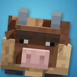
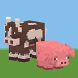
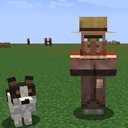
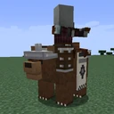
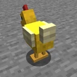
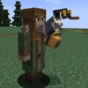
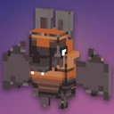

Mods nuevos
Mods de Minecraft a pedido para tu pack
Si quieres un mob, un ítem, un bloque o una mecánica que ningún mod tiene, te lo puedo hacer para tu pack en Forge 1.20.1 o NeoForge 1.21.1. Cuéntame la idea en unas líneas. Si tienes un dibujo, ayuda harto.
Arma tu ticket Únete al Discord
Qué puedo hacer
- Mobs, que es lo que más he hecho. Un animal o un enemigo nuevo, con su modelo, sus animaciones y los biomas donde aparece.
- Ítems y bloques, con textura y receta.
- Mecánicas también, como el pastor de Biome Herders, que saca el rebaño al amanecer y lo trae de vuelta al atardecer.
Cómo va
- Abres un ticket desde #pedidos en mi Discord y me cuentas la idea, con un dibujo o una imagen de referencia si tienes.
- Te pregunto lo que falte y ahí te doy el precio. No pagas nada antes de eso.
- Lo hago y lo pruebo en el juego. En los mods más grandes te mando capturas o un video corto mientras avanzo.
- Lo pruebas en tu propio pack, y el último pago va después de eso.
Precio
No hay lista de precios para esto. Cotizo cada mod en el ticket, cuando sé lo que quieres.
Lo que he hecho hasta ahora
Ya tengo siete mods propios en CurseForge, todos de mobs:

MooffaloUna vaca búfalo para sabanas y taigas. Pasta, se puede esquilar y se echa junto a tus cultivos para que crezcan.
Barnyard CousinsUn cerdo de orejas caídas y una vaca manchada junto a los de vanilla, con siete pelajes cada uno según el bioma.
Biome HerdersLas aldeas tienen un pastor con su perro que saca el rebaño a pastar al amanecer y lo trae de vuelta al atardecer.
BeastmastersLos saqueadores llegan montados en osos y caimanes de guerra. Si matas al jinete, puedes domar a la bestia.
Heritage HensGallinas con genes. Crúzalas, junta los colores de huevo, y más o menos 1 de cada 40 pollitos sale dorado.
FalconersCetreros illager mandan un halcón a robarte lo que tienes en la mano. Mata al halcón o al cetrero para recuperarlo.
Fruit BatUn murciélago frutero naranjo para las selvas. Te muerde en la oscuridad si no tienes una fruta, y si lo alimentas ayuda a tus cultivos.
Preguntas
¿Puedes hacer un mob a partir de mi dibujo?
Sí. Mándalo en el ticket y armo el modelo y las texturas desde ahí.
¿En qué versiones trabajas?
Forge 1.20.1 y NeoForge 1.21.1.
¿Cuánto cuesta un mod a pedido?
Depende del mod, no hay un número para todos. Mándame la idea en un ticket y te digo.